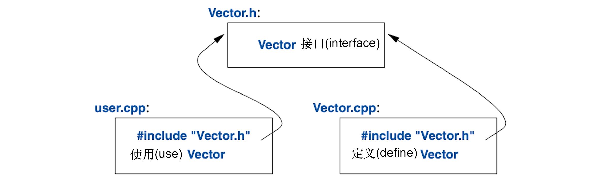

3
模块化
我打断你的时候不许打断我。
—— 温斯顿·丘吉尔
3.1 导言
一个C++程序由许多独立开发的部分组成，比如函数（§1.2.1）、 用户定义类型（第2章）、类的层级（§4.5）及模板（第6章）。 管理它们的关键在于给它们之间的交互作出清晰的定义。 第一步也是最重要的一步，是区分接口和实现。 这语言层面上，C++用声明表示接口。 声明（declaration）逐一列举那些用于操控函数或类的事物。例如：
double sqrt(double); // 平方根函数接收double参数，返回double值
class Vector {
public:
Vector(int s);
double& operator[](int i);
int size();
private:
double* elem; // elem指向一个数组，该数组承载sz个double
int sz;
};
这里的重点是函数体，即函数定义（definition），位于“别的地方”。
对于这个示例，可能会有需求让Vector的数据也位于“别的地方”，
但我们得到后面（抽象类型；§4.3）处理这个问题。
sqrt()的定义可能是这样：
double sqrt(double d) // sqrt()的定义
{
// ... 数学课本里的算法 ...
}
对于Vector，我们需要给它的三个成员函数都提供定义：
Vector::Vector(int s) // 构造函数的定义
:elem{new double[s]}, sz{s} // 初始化成员变量
{
}
double& Vector::operator[](int i) // 取下标运算符的定义
{
return elem[i];
}
int Vector::size() // size()的定义
{
return sz;
}
Vector的函数必须提供定义，sqrt()就不必，因为它隶属于标准库。
但是二者并无本质差别：程序库仅仅是“我们恰好用到的某些其它代码”，
编写这些代码的语言构件与我们用的语言构件相同。
任何实体都可以具有多个声明，但定义只能有一个。
3.2 分离编译
C++支持分离编译，这种情况下，对于用到的类型和函数，用户仅能见到它们的声明。 这些类型和函数的定义位于独立的源文件中，并且被单独编译。 借助分离编译，可以把程序组织成一系列半独立的代码片段。 这种分离操作可用来缩短编译时间，把逻辑上独立的部件严格分离开（从而减少犯错）。 程序库通常就是一组独立编译的代码片段（比如函数）。
一般来说，我们把定义模块接口的声明部分放在一个文件里的模块中， 并通过文件名表明它的用途，例如：
// Vector.h:
class Vector {
public:
Vector(int s);
double& operator[](int i);
int size();
private:
double* elem; // elem指向一个数组，该数组承载sz个double
int sz;
};
该声明会被置于名为Vector.h的文件中，然后，用户包含（include）
这个头文件（header file），以访问该接口。例如：
// user.cpp:
#include "Vector.h" // 获取Vector的接口
#include <cmath> // 获取标准库中的数学函数，其中包括sqrt()
double sqrt_sum(Vector& v)
{
double sum = 0;
for (int i=0; i!=v.size(); ++i)
sum+=std::sqrt(v[i]); // 平方根的和
return sum;
}
为了确保对编译器的一致性，提供Vector实现的
.cpp文件同样会包含提供接口的.h文件：
// Vector.cpp:
#include "Vector.h" // 获取Vector的接口
Vector::Vector(int s)
:elem{new double[s]}, sz{s} // 初始化成员变量
{
}
double& Vector::operator[](int i)
{
return elem[i];
}
int Vector::size()
{
return sz;
}
user.cpp和Vector.cpp的代码共享Vector.h内的Vector接口信息，
但除此之外它们是独立的，并可以独立编译。该程序的各部分可图示如下：

严格来说，分离编译并非语言自身的问题，而是事关如何最大化利用特定语言实现优势的问题。 无论如何，这在实践中意义重大。 优秀的程序组织方法是： 把程序当作一组明确定义过依赖关系的模块，利用语言特性表达这种模块化的逻辑关系， 再把这种关系通过文件以实体形式暴露出来，以实现高效的分离编译。
可以被独自（包括#include进来的.h文件）编译的.cpp文件，
叫做编译单元（translation unit）。
一个程序可以由数以千计的编译单元组成。
3.3 模块（C++20）
使用#include把程序组织成多个部件的方法，很古老、易出错且成本高昂。
如果在101个编译单元中用到#include header.h，
header.h中的文本将被编译器处理101次。
如果在header2.h之前用了#include header1.h，那么header1.h
中的声明和宏可能会影响header2.h里代码的意义。
很明显，这不太理想，实际上自从1972年这个机制被引入C语言以来，
对于成本高和bug多，它就一直负有不可推卸的责任。
寻找在C++中表示物理模块的好方法，终于初见曙光了。
这个语言特性叫module，尚未进入 ISO C++，
但已经是一个 ISO技术细则（Technical Specification）[ModulesTS]，
并将成为C++20的一部分1。
因为在编译器实现中已经提供了该功能，所以，尽管其细节可能还要变动，
而且可能要等好几年才能广泛用于生产环境，我依然要在这里推荐使用它。
使用#include的老代码，还会“存活”相当长的时间，
因为要更新它们，代价高昂而且非常耗时。
使用module组织§3.2中Vector和sqrt_sum()的示例，方法如下：
// 文件 Vector.cpp:
module; // 此编译单元将定义一个模块
// ... 此处为 Vector 的实现所需的内容 ...
export module Vector; // 定义名为"Vector"的模块
export class Vector {
public:
Vector(int s);
double& operator[](int i);
int size();
private:
double* elem; // elem指向一个数组，该数组承载sz个double
int sz;
};
Vector::Vector(int s)
:elem{new double[s]}, sz{s} // 初始化成员变量
{
}
double& Vector::operator[](int i)
{
return elem[i];
}
int Vector::size()
{
return sz;
}
export int size(const Vector& v) { return v.size(); }
以上代码定义了名为Vector的module，
它导出了类Vector和它所有的成员函数，以及非成员函数 size()。
使用该module的方法是：在需要的地方import它。例如：
// 文件 user.cpp:
import Vector; // 获取Vector的接口
#include <cmath> // 获取标准库中的数学函数，其中包括sqrt()
double sqrt_sum(Vector& v)
{
double sum = 0;
for (int i=0; i!=v.size(); ++i)
sum+=std::sqrt(v[i]); // 平方根的和
return sum;
}
我本来也可以import标准库中的数学函数，但我用了老式的#include，
就是为了表明新老方式可以混用。
这样混用的形式，对于老代码逐步从#include迁移到import是必不可少的。
头文件和模块方式的区别不仅仅在语法层面：
- 模块仅编译一次（而非在每个用到的编译单元都处理）
- 两个模块的
import顺序可任意颠倒，而不会影响其意义 - 如果把什么东西导入到一个模块，该模块的用户无法隐式访问到被导入的东西，
以至于引起麻烦：
import不会跨模块传导。
模块会显著影响可维护性编译期的性能。
3.4 命名空间
除了函数(§1.3)、类(§2.3)以及枚举(§2.5)， C++还提供一个叫命名空间（namespace）的机制， 用来表示某些声明相互依托，以便这些名称不会跟其它名称发生冲突。 比如说，我想弄个复数类型(§4.2.1, §14.4)：
namespace My_code {
class complex {
// ...
};
complex sqrt(complex);
// ...
int main();
}
int My_code::main()
{
complex z {1,2};
auto z2 = sqrt(z);
std::cout << '{' << z2.real() << ',' << z2.imag() << "}\n";
// ...
}
int main()
{
return My_code::main();
}
把我的代码放到命名空间My_code里后，
确保了我定义的名称没有跟标准库命名空间std(§3.4)中的名称产生冲突。
这种谨慎就很明智了，因为标准库确实提供了complex算术(§4.2.1, §14.4)。
想要在另一个命名空间中访问某个名称，最简单的方式就是：
使用命名空间名进行限定（比如std::cout和My_code::main），
“真正的main”定义在全局命名空间里，就是说并非位于某个命名空间、类或者函数的局部。
反复用命名空间名限定名称，很单调且容易分神，
可以用using-声明把名称引入某个作用域：
void my_code(vector<int>& x, vector<int>& y)
{
using std::swap; // 使用标准库中的 swap
// ...
swap(x,y); // std::swap()
other::swap(x,y); // 别的 swap()
// ...
}
using-声明 让命名空间中的一个名称在当前作用域可用，
其效果就像该名称声明在当前作用域中一样。
在using std::swap语句之后，就好像swap被声明在my_code()中一模一样。
要访问标准库命名空间中的所有名称，可以用这个using-指令：
using namespace std;
在using-指令所处的作用域内，它提及的命名空间内的所有名称都能以非限定方式访问。
因此在针对std的using-指令后，我们可以直接用cout代替std::cout。
使用using-指令后，我们无法再对该命名空间内的名称进行精细挑选，
因此要慎用这个功能，它通常适用于程序中广泛使用的库（比如std）,
或者在转化某个未使用namespace程序的过渡期。
命名空间主要用于组织较大的程序组件，比如程序库。 在使用多个单独开发的部分组成程序时，它能化简这个过程。
3.5 错误处理
错误处理是个即庞大又复杂的主题，它的关注点和覆盖面超出了语言特性本身，
而牵涉到编程技术和相关工具。
好在C++的某些特性能帮个忙。主要帮手就是类型系统。
我们不是大费周章地使用内置类型（比如char、int及double）
和语句（比如if、while及for）直接构建程序，
而是构建适用于我们应用程序的类型（比如string、map及regex）
和算法（比如sort()、find_if()及draw_all()）。
这些高级别的设施简化了编程，限制了犯错误的几率
（比如说，你不太可能尝试把树遍历算法应用在对话框上），还能帮助编译器捕获错误。
C++的主要语言设施致力于设计并实现出优雅且高效的抽象
（比如，用户定义类型和应用在它们之上的算法）。
这种抽象的一个影响是：在程序运行时，把故障的检测点和处理点相互分离。
当程序增大，尤其是库被广泛应用，错误处理的标准化就愈加重要了。
在程序开发的早期就规划错误处理规划的策略，是个好主意。
3.5.1 异常
回到Vector的例子。
对于§2.3中的vector，对元素越界访问（out-of-range）的时候，应当做些什么呢？
- 在这个情形下，
Vector的作者不会知道用户的意图 （一般来说，Vector的作者甚至不知道这个vector跑在哪个程序里。）
Vector的用户也没办法一直去检测这个问题 （如果有办法，那这种越界访问压根儿就不该发生。）
假设我们想从越界访问的错误中恢复运行，解决方案是：
实现Vector的人检测越界访问的企图，然后把它告知用户。
然后用户就可以采取适当的措施。举例来说：
Vector::operator[]()能检测越界访问的企图，并抛出out_of_range异常：
double& Vector::operator[](int i)
{
if (i<0 || size()<=i)
throw out_of_range{"Vector::operator[]"};
return elem[i];
}
throw把控制权转给处理out_of_range异常的代码，
这个代码位在某些函数里，而这些函数直接或间接地调用了Vector::operator[]。
要做到这些，编译器就得展开（unwind）函数调用堆栈，以便回退到调用者的代码环境。
就是说，异常处理机制将根据需要退出作用域和函数，以便回退到有意处理该类异常的调用者，
必要时沿途调用析构函数(§4.2.2)。例如：
void f(Vector& v)
{
// ...
try { // 此处的异常将被下面定义的代码处理
v[v.size()] = 7; // 试图访问v到末尾之后
}
catch (out_of_range& err) { // 坏菜了：out_of_range错误
// ... 处理越界错误 ...
cerr << err.what() << '\n';
}
// ...
}
我们把有意异常处理的代码放到try-代码块里。
给v[v.size()]赋值的企图不会得逞。
因此，会进入catch-子句，里面包含处理out_of_range异常的代码。
out_of_range异常定义在标准库中（<stdexcept>里），
并且实际上已经被标准库里某些容器的访问函数用到了。
我以引用方式捕捉此异常以避免复制，并使用what()函数打印错误信息，
这个信息是在throw-位置放进异常里的。
使用异常处理机制可以让错误处理更简洁、更系统化，也更具可读性。
要确保这一点，就别滥用try-语句。
以简洁和系统化方式实现错误处理的主要技术（被称为
资源请求即初始化（Resource Acquisition Is Initialization; RAII））
将在 §4.2.2 中细聊。
RAII的大体思路是：让类的构造函数获取正常运作所需的全部资源，
然后让析构函数释放全部资源，这样资源的释放就可以有保障地隐式执行。
如果一个函数绝对不应该抛出异常，可以用noexcept声明它。例如：
void user(int sz) noexcept
{
Vector v(sz);
iota(&v[0],&v[sz],1); // 用1,2,3,4...填充v（详见§14.3）
// ...
}
万一user()还是抛出了异常，就会立即调用std::terminate()以终止程序。
3.5.2 不变式
使用异常来指示越界访问，演示了这样的情形：
函数检验参数，并在不满足基本假设——先决条件（precondition）——时拒绝运行。
如果我们要郑重其事地声明Vector的下标运算符，就应该有些诸如此类的表达：
“索引必须位于区间[0:size())内”，
而实际上，我们在operator[]()里检查的就是这个。
[a:b)这个标记定义了一个半开区间，就是说，a在这个区间里，而b不在。
在定义函数的时候，应当考虑一下：前置条件是什么；是否要检测它(§3.5.3)。
对绝大多数程序来说，应该对简单的不变式进行测试，请参阅 §3.5.4。
既然operator[]()运算符要操作Vector类型的对象，
那么，如果Vector的成员不具备“合理的”值，这个运算就毫无意义。
确切的说，我们指出了“elem指向承载sz个元素的数组”，但仅仅止步于注释中。
这种为类声称某个假设为真的语句被称为
类的不变式（class invariant），简称不变式（invariant）。
为类制定不变式（以确保成员函数有的放矢）的职责归构造函数，
而成员函数运行完成之后，要确保不变式依然成立。
不巧的是，我们Vector的构造函数有点虎头蛇尾了。
它出色地为Vector的成员变量完成了初始化，却没留意传入的参数是否合理。
考虑一下这个：
Vector v(-27);
基本上，这就要出事了。
更靠谱的定义是这样的：
Vector::Vector(int s)
{
if (s<0)
throw length_error{"Vector constructor: negative size"};
elem = new double[s];
sz = s;
}
我使用标准库里的length_error异常报告“元素数量不是正整数”的问题，
因为标准库也用这个异常报告这类问题。
如果new运算符没找到可分配的内存，将抛出std::bad_alloc。
我们可以这么写：
void test()
{
try {
Vector v(-27);
}
catch (std::length_error& err) {
// 处理容量为负数的情况
}
catch (std::bad_alloc& err) {
// 处理内存耗尽的问题
}
}
你可以定义自己的类当作异常使用，可以在检测到异常的地方塞入任意信息， 这些信息会被带到处理异常的地方(§3.5.1)。
一般来说，函数在捕获异常之后就已经没法搞定待处理的任务了。 然后，异常“处理”就意味着低限度的局部资源清理，然后重新抛出该异常。例如：
void test()
{
try {
Vector v(-27);
}
catch (std::length_error&) { // 处理一下，然后重新抛出
cerr << "test failed: length error\n";
throw; // 重新抛出
}
catch (std::bad_alloc&) { // 糟！这个程序没法处理内存耗尽的问题
std::terminate(); // 终止程序
}
}
在设计良好的代码里，try-代码块并不多见。
请系统化地使用 RAII 技术(§4.2.2，§5.3)以避免滥用try-代码块。
不变式的概念对于类的设计很重要，对于函数的设计，前置条件有类似的作用。不变式
- 帮助我们理解自己到底想要什么
- 强制我们更加具体；这让我们对代码的正确性更有胜算（当然要在调试和测试之后）。
不变式的概念是C++资源管理的基础， 构造函数（第4章）和析构函数为它提供支持(§4.2.2，§13.2)。
3.5.3 错误处理的替代方案
对于所有现实世界的软件而言，错误处理都是个主要的问题， 所以就自然而然地存在多种多样的方案。 如果一个错误在函数内被侦测到，并且无法就地进行处理， 那么这个函数就必须想办法跟调用者沟通这个问题。 对此，抛出异常是C++最常规的机制。
对于某些语言来说，设计异常机制仅仅是提供返回值的替代方案。 C++不在其列：异常机制的设计意图是给未能完成的任务报告故障。 异常机制跟构造函数及析构函数结合起来， 为错误处理和资源管理(§4.2.2, §5.3)提供了一致的框架。 编译器专门做过优化，跟通过异常抛出同样的值相比，返回值的操作成本低廉得多。
抛出一个异常不仅仅是为当前无法处理的错误报告出错这么简单。 对于分派到的任务，函数可以这样说明自己无法执行：
- 抛出一个异常
- 用特定返回值表示失败
- （使用某个函数，比如
terminate()、exit()或abort()）终止程序
返回某个错误标识（“错误码（error code）”）的情形有：
- 常见且可预期的故障。例如： 打开文件的请求失败很常见（可能是文件名对应的文件不存在，或者权限不够）
- 调用层级非常少，有理由认为调用者能处理该故障。
抛出异常的情形有：
- 该错误极其罕见，以至于程序员特别容易忽视对它的检查。
比如，你上次检查
pringf()的返回值是什么时候？ - 直接调用者也没办法处理这个错误。取而代之，必须把它层层退回给最终调用者。 比如：对于应用程序的内存分配失败和网络丢失问题， 如果要求每个函数都进行妥善处理，这根本就行不通。
- 某个应用程序的底层模块里新增的错误类型，而高层模块根本没写过处理它的代码。 例如：某个应用程序原本是单线程的，改成了多线程， 或者资源本来是从本地访问，变成了远程访问的网上资源。
- 错误码根本没有有效的途径返回。 例如：构造函数根本就没有可供“调用者”检查的返回值。 特别是在调用多个局部变量的构造函数，或者是构造复杂对象的一部分时， 基于错误码的资源清理会变得相当复杂。
- 通过值返回的方式，会搞得很复杂或者代价高昂，
例如：要同时返回一个值和一个错误标识（比如
pair; §13.4.3）， 可能需要采用传出参数、非局部的错误状态标识，或者什么其它弯弯绕儿。 - 错误必须沿整个调用路径传达到“最终调用者”。 反复检查错误码就很繁冗、代价高昂，还容易出错。
- 修复该错误的方案取决于多个函数调用的结果， 需要在多个函数调用之间维护某个局部状态，还需要复杂的控制结构。
- 出错的函数是个回调函数（作为参数的函数）， 以至于直接调用者甚至根本不知道调用了什么函数。
- 要求执行某些“撤回操作”的错误。
终止程序的情形有：
- 某种无法修复的错误。 例如：对于许多——但并非所有——系统，不存在合理的手段解决内存耗尽问题。
- 所在系统检测到显著错误时，错误处理机制要求重启线程、进程或者机器本身。
要确保程序被终止，一个方法是为函数添加noexcept，
这样该函数实现中任意位置的throw都能触发terminate()。
注意，某些应用程序不接收无条件终止，因此必须采取替代方案。
很遗憾，以上这些情形并非泾渭分明、易于运用。程序的体量和复杂度都有影响。 有时在程序的演化过程里，取舍会发生变化。这有赖于经验。 如果拿不准，尽量用异常，因为它在体量变化时工作良好， 没必要借助外部工具检查去确保所有错误都被处理。
别笃信所有的错误码或者所有的异常都不可取；它们都有明确的用途。 另外，也别相信有关异常处理缓慢的谣言； 相较于复杂或罕见错误情形的妥善处理和对错误码的反复检查，它通常都快得多。
简洁高效利用异常进行错误处理，RAII(§4.2.2, §5.3)至关重要。
充斥着try-块的代码往往体现了错误处理策略中最糟糕的方面，
这种情形应该采用错误码。
3.5.4 契约（contract）
目前尚无通用和标准的方式书写不变式、前置条件等可选的运行时测试。 一个名为“契约”的机制提交到了C++20[Garcia,2016] [Garcia,2018]。 它的目标是帮助一部分用户把程序做得更稳妥，他们依赖于测试 ——进行地毯式的运行时检查——然后在部署的代码里进行最低限度的检查。 在依赖系统化大规模代码检查的组织中，这种方法广泛用于高性能应用程序。
目前只能依赖权宜之计，例如用命令行里的宏控制运行时检查：
double& Vector::operator[](int i)
{
if (RANGE_CHECK && (i<0 || size()<=i))
throw out_of_range{"Vector::operator[]"};
return elem[i];
}
标准库提供了调试用的宏assert()，以确保某个条件在运行时成立。例如：
void f(const char* p)
{
assert(p!=nullptr); // p绝不能是nullptr
// ...
}
如果这个assert()条件在“调试模式”不成立，程序将终止。
如果不在调试模式，assert()就不做检查。
这个方法忒糙还不灵活，不过通常也凑合够用了。
3.5.5 静态断言
异常给运行时发现的问题报错。如果能在编译时发现错误就该大力推广。 对于绝大多数类型系统、区分用户定义类型的接口那些语言特性而言，这就是意义所在。 最起码，我们可以对编译期已知的大多数属性进行基本检查， 以编译器错误信息的形式汇报不满足需求的情况。例如：
static_assert(4<=sizeof(int), "integers are too small"); // 检查整数容量
在不满足4<=sizeof(int)时，这段代码输出integers are too small；
就是说在系统里的int不足4个字节时。
我们把这种陈述预期的语句称为断言（assertion）。
static_assert机制可用于任意——可以通过常量表达式(§1.6)表示的——情形。例如：
constexpr double C = 299792.458; // km/s
void f(double speed)
{
constexpr double local_max = 160.0/(60*60); // 160 km/h == 160.0/(60*60) km/s
static_assert(speed<C,"can't go that fast"); // 错误：speed必须是常量
static_assert(local_max<C,"can't go that fast"); // OK
// ...
}
如果A不为true，那么static_assert(A,S)就会把S作为编译器错误信息输出。
如果不想输出特定信息就把S留空，编译器会采用默认信息：
static_assert(4<=sizeof(int)); // 采用默认信息
默认信息的内容通常是static_assert所在的源码位置，外加一个表示断言谓词的字母。
static_assert最重要的用途体现在泛型编程(§7.2, §13.9)
中对用作参数的类型有特定要求时。
3.6 函数参数和返回值
把信息从程序的一个位置向另一个位置传递，最主要且推荐的方法是通过函数调用。 执行功能所需的信息作为参数传入函数，生成的结果以返回值形式传出。例如：
int sum(const vector<int>& v)
{
int s = 0;
for (const int i : v)
s += i;
return s;
}
vector fib = {1,2,3,5,8,13,21};
int x = sum(fib); // x变成53
在函数间传递信息还有其它途径，比如全局变量(§1.5)、 指针和引用参数(§3.6.1)以及类对象（第4章）的共享状态。 全局变量极不推荐，它是恶名昭彰的出错根源；状态应该仅在特定函数中共享， 这些函数要共同实现出良好定义过的抽象（也就是：类的成员函数；§2.3）。
既然函数信息的传入和传出如此重要，就不难想见它们有多种方式。主要涉及：
- 该对象是被复制还是被共享？
- 如果该对象被共享，是否可变？
- 如果对象转移了，是否要留下一个“空对象”(§5.2.2)？
参数传递和返回值传出的默认行为都是“复制”(§1.9)，某些复制可以隐式优化为转移。
在sum()例子中，作为结果的int是以复制方式传出sum()的，
但对于可能容量巨大的vector，让它以复制方式进入sum()将会低效且毫无意义，
所以参数以引用方式传入（用&标示；§1.7）。
sum()无需修改其参数，这种不可变更性通过将vector声明为const(§1.6)来标示，
因此vector通过const-引用传递。
3.6.1 参数传递
先研究怎么把值弄进函数里。默认情况下是复制（“传值（pass-by-value）”）， 如果想指向调用者环境里的对象，可以通过引用（“传引用（pass-by-reference）”）。 例如：
void test(vector<int> v, vector<int>& rv) // v是传值；rv是传引用
{
v[1] = 99; // 修改v（局部变量）
rv[2] = 66; // 修改rv引用向的内容
}
int main()
{
vector fib = {1,2,3,5,8,13,21};
test(fib,fib);
cout << fib[1] << ' ' << fib[2] << '\n'; // 输出2 66
}
关心性能的时候，通常对小型的值传值而较大的值传引用。 此处的“小”意味着“复制的成本低廉东西”。 具体来说，“小”的含义因机器架构而异， 但是“不超过两或三个指针容量”是个颇受赞扬的指标。
如果出于性能原因选择传引用但无需修改参数，
可以像sum()例中那样，传const(常)引用。
这是迄今为止的优秀代码中的常见情形：它运行快还不易错。
函数参数带有缺省值的情形也很常见；就是说，一个首选值或者最常用的值。 可以使用缺省函数参数（default function argument）进行指定，例如：
void print(int value, int base =10); // 以“base”为基数输出value
print(x,16); // 十六进制
print(x,60); // 六十进制（苏美尔人）
print(x); // 使用缺省值：十进制
``
这是写法简化过的重载：
```cpp
void print(int value, int base); // 以“base”为基数输出value
void print(int value) // 以10为基数输出value
{
print(value,10);
}
3.6.2 值返回
完成计算之后，需要把结果弄出函数并交回给调用者。 跟参数一样，值返回也默认采用复制方式，并且这对于较小的对象很完美。 只有在把不属于函数局部作用域的东西转给调用者时，才通过“传引用”返回。例如：
class Vector {
public:
// ...
double& operator[](int i) { return elem[i]; } // 返回对第i个元素的引用
private:
double* elem; // elem指向一个数组，该数组承载sz个double
// ...
};
Vector的第i个元素的存在不依赖于取下标运算符，因此可以返回对它的引用。
另一方面，在函数的返回操作结束后，局部变量就消失了，所以不能返回指向它的指针或引用：
int& bad()
{
int x;
// ...
return x; // 糟糕：返回了指向局部变量x的引用
}
万幸，所有主流C++编译器都能捕获bad()里这个明显的错误。
返回引用或者较“小”类型的值很高效，但是要把大量信息传出函数该怎么办呢？ 考虑这个示例：
Matrix operator+(const Matrix& x, const Matrix& y)
{
Matrix res;
// ... 对所有 res[i,j], res[i,j] = x[i,j]+y[i,j] ...
return res;
}
Matrix m1, m2;
// ...
Matrix m3 = m1+m2; // 没有复制
即便对时下的硬件而言，Matrix可能都非常（very）大，而且复制的代价高昂。
因此我们不进行复制，
而是为Matrix定义一个转移构造函数（move constructor）(§5.2.2)，
从而以低廉的代价把Matrix从operator+()传出。
此处不需要抱残守缺地使用手动内存管理：
Matrix* add(const Matrix& x, const Matrix& y) // 复杂且易错的20世纪风格
{
Matrix* p = new Matrix;
// ... 对所有的 *p[i,j], *p[i,j] = x[i,j]+y[i,j] ...
return p;
}
Matrix m1, m2;
// ...
Matrix* m3 = add(m1,m2); // 仅复制一个指针
// ...
delete m3; // 这个操作太容易忘记
很遗憾，通过指针返回大型对象在老式代码里很常见，而且是个难以捕获错误的主要根源。
别写这样的代码。
注意，operator+()跟add()同样高效，但是定义简单、易于使用还不易出错。
如果函数搞不定手上的活儿，它可以抛出异常(§3.5.1)。 这可以避免因为充斥着测试“罕见问题”错误码而把代码搞得一团糟。
函数的返回类型可以从返回值本身推断出来。例如：
auto mul(int i, double d) { return i*d; } // 此处的“auto”意思是“推断返回类型”
这很方便，尤其对于泛型函数（函数模板（function template）; §6.3.1）以及 lambda表达式(§6.3.3)来说，但是请谨慎采用，因为推导出来的类型会让接口不稳定： 对函数（或lambda表达式）内容的修改，会改变返回类型。
3.6.3 结构化绑定
函数只能返回单独的一个值，但这个值可以是包含多个成员的类对象。 这使得我们得以高效地返回多个值。例如：
struct Entry {
string name;
int value;
};
Entry read_entry(istream& is) // 很菜的读取函数（更好的版本参看 §10.5）
{
string s;
int i;
is >> s >> i;
return {s,i};
}
auto e = read_entry(cin);
cout << "{ " << e.name << " , " << e.value << " }\n";
此处的{s,i}被用于构建Entry类型的返回值。
与之类似，可以把Entry的成员“拆包”到本地变量里：
auto [n,v] = read_entry(is);
cout << "{ " << n << " , " << v << " }\n";
auto [n,v]这句声明了两个局部变量n和v，
它们的类型从read_entry()的返回类型推导出来。
这个给类对象成员命名的机制叫结构化绑定（structured binding）。
考虑以下示例：
map<string,int> m;
// ... 填充 m ...
for (const auto [key,value] : m)
cout << "{" << key "," << value << "}\n";
按惯例，可以用const和&限定auto，例如：
void incr(map<string,int>& m) // 为m的每个元素自增1
{
for (auto& [key,value] : m)
++value;
}
在结构化绑定用于不包含私有数据的类时，绑定方式显而易见： 绑定行为定义的名称数量必须跟类里面的非静态数据成员数量相同， 绑定行为中的引入名称按次序对应成员变量。 与显式使用复合对象相比，这种代码的质量并无差异； 使用结构化绑定的主旨在于恰如其分地表达意图。
通过成员函数访问类对象的操作同样可行。例如：
complex<double> z = {1,2};
auto [re,im] = z+2; // re=3; im=2
conplex有两个数据成员，但它的接口包含两个访问函数，
分别是real()和imag()。
把一个complex<double>映射到两个局部变量，比如re和im，
是可行且高效的，但此种技巧不在此书的关注范畴。
3.7 忠告
- [1] 注意区分声明（用做接口）和定义（用做实现）；§3.1。
- [2] 使用头文件代表接口，以强调逻辑结构；§3.2；[CG: SF.3]。
- [3] 在实现函数的源文件里
#include它的头文件；§3.2；[CG: SF.5]。 - [4] 不要在头文件里定义非内联函数；§3.2；[CG: SF.2]。
- [5] （在支持
module的地方）以module替代头文件；§3.3。 - [6] 使用命名空间表达逻辑结构；§3.4；[CG: SF.20]。
- [7] 为代码迁移、基本类库（比如
std），或在局部作用域内使用using-指令； §3.4；[CG: SF.6] [CG: SF.7]。 - [8] 别把
using-指令放在头文件里；§3.4；[CG: SF.7]。 - [9] 在无法搞定待处理的任务时，抛出异常指出这种情况；§3.5；[CG: E.2]。
- [10] 仅在错误处理的情形下使用异常；§3.5.3；[CG: E.3]。
- [11] 在直接调用者该处理某个错误的时候，采用错误码；§3.5.3。
- [12] 在错误将要穿过大量函数调用层级的时候，抛出异常；§3.5.3。
- [13] 拿不定该用异常还是错误码的时候，用异常；§3.5.3。
- [14] 在设计早期就确定错误处理的策略；§3.5；[CG: E.12]。
- [15] 使用能够反映设计意图的用户定义类型作为异常（而非内置类型）；§3.5.1。
- [16] 不要在每个函数中都捕捉所有异常；§3.5；[CG: E.7]。
- [17] 用 RAII 代替
try-代码块；§3.5.1, §3.5.2；[CG: E.6]。 - [18] 如果函数不该抛出异常，用
noexcept声明它；§3.5；[CG: E.12]。 - [19] 让构造函数建立不变式，如果做不到就抛出异常；§3.5.2；[CG: E.5]。
- [20] 围绕不变式设计错误处理策略§3.5.2；[CG: E.4]。
- [21] 能在编译期检查的就在编译期检查；§3.5.5 [CG: P.4] [CG: P.5]。
- [22] “小”值传值，“大”值传引用；§3.6.1；[CG: F.16]。
- [23] 尽可能用常（
const）引用而非普通引用；§3.6.1；[CG: F.17]。 - [24] 使用函数返回值进行返回（而不要用传出参数）； §3.6.2；[CG: F.20] [CG: F.21]。
- [25] 别滥用返回类型推断；§3.6.2。
- [26] 别滥用结构化绑定；使用具名返回类型可以让文档更清晰；§3.6.3。
1. 在本书翻译的时候，也就是2022年初，module已经被纳入 ISO C++，并定义在“INTERNATIONAL STANDARD ISO/IEC 14882:2020”（该标准文件的第6版，出版于2020年12月）的第10章。 ↩